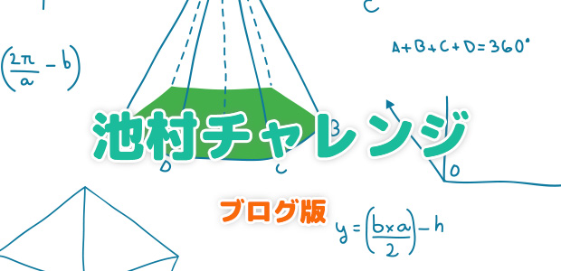
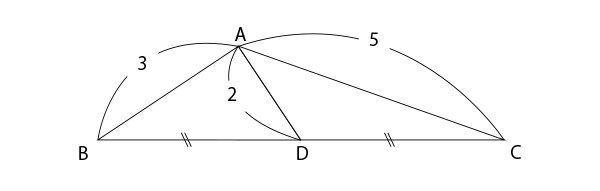
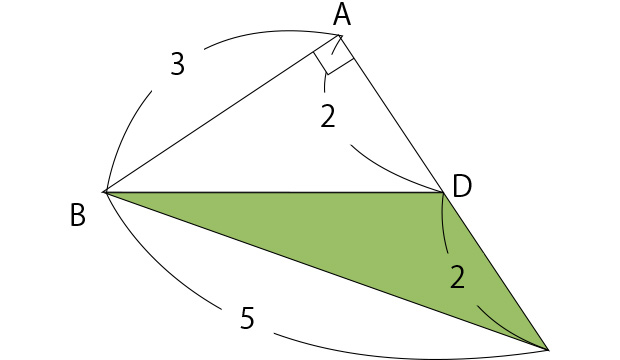
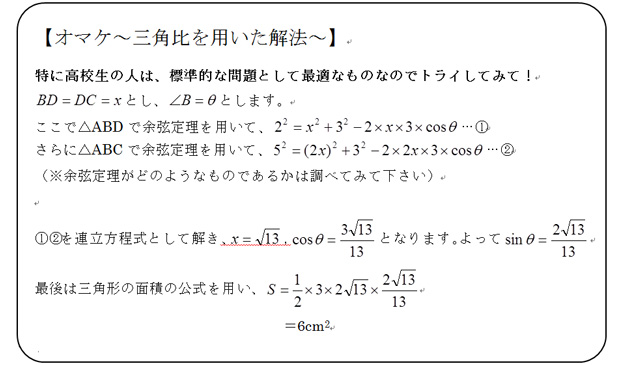

Freepikによるデザイン
図形の面積は？
今回は私が考えた軽めの平面図形問題を紹介します。
一応どの年代の子にもチャレンジしてもらえる内容ですので、やってみて下さい。
問題
図のように三角形ABCの辺BCに中点Dをとります。AB＝3cm，AD＝2cm，AC＝5cmで、BD＝DCです。このとき、三角形ABCの面積を求めなさい。

図のように三角形ABCの辺BCに中点Dをとります。AB＝3cm，AD＝2cm，AC＝5cmで、BD＝DCです。このとき、三角形ABCの面積を求めなさい。
実はこの問題、色々な解法があります。
一つは中学生向けに「三平方の定理」を使った解法。ただし、これは補助線や立式が非常に複雑になるのであっさり解きたい人には不向きです。
まだ高校生向けの「三角比の余弦定理」の方がシンプルです。
ちなみにこの解法に関しては参考までに最後に紹介します。
ということで、メインとしては小学生でも取り組める方法で解説します。
切ってつなげる解法
さて、これは本当にあっさりした解法です。
まず、BDとDCの長さが同じだということに注目します。
そして三角形ADCを、点Dを中心として180°回転させBDとDCをくっつけます。

するとどうでしょう。
これ、前々回のブログ（2015年5月27日「質問にお答えします～小学生でもわかる数学とは？～」）でちょっと紹介した「3：4：5の直角三角形」ではありませんか！
三辺がこのような比の三角形は3と4の間の角が直角になることが分かっていますので、まさにこの直角三角形の面積そのものが、本問の正解となります。
答え 6cm2
